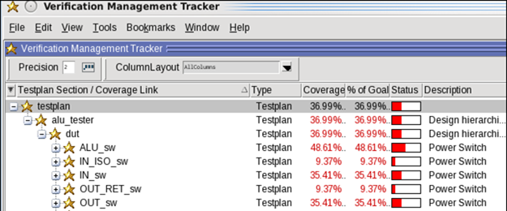
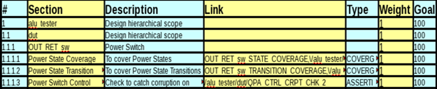
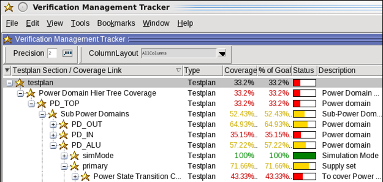
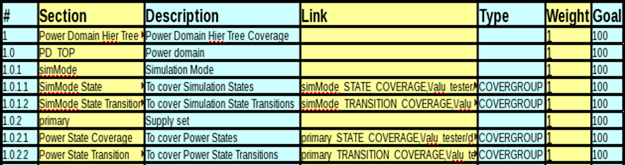

Use the
Power Aware test plan either in an XML file, or in the Verification
Management Tracker window of the simulator to analyze Power Aware
coverage details. Also, you can add non-Power Aware coverage details
in the test plan.
Restriction: ModelSim SE does not support the test
plan generation.
Procedure
- Compile
using your existing command:
vcom <design_files>
vlog <design_files>
- Optimize using your existing
vopt command with the following arguments:
vopt -pa_coverage -pa_enable=autotestplan [+cover]
[-pa_enable=codecoverage] [other vopt args]
-pa_coverage —
Collects Power Aware coverage data.
Specify
a value to the -pa_coverage argument to selectively collect coverage
data. If you do not specify a value to the -pa_coverage argument,
then all values, except implicitportnet, are enabled.
For example, the following command collects Power Aware coverage data
of dynamic checks:
vopt -pa_coverage=checks [other vopt args]
To enable a specific dynamic check, specify values to the ‑pa_checks argument
of the vopt command. See “Dynamic Checks”.
To specify
more than one value to the -pa_coverage argument, use the plus sign
(+) operator between the values.
For example:
vopt -pa_coverage=switch+iso [other vopt args]
To enable complete
cross coverage, specify the following argument with your vopt command.
See “Cross Coverage of Power States”.
vopt -pa_coverage=powerstate+crossdontcare [other vopt args]
-pa_enable=autotestplan — Enables
generation of the Power Aware test plan.
To enable hierarchical view of the power domains in the test
plan, use the following argument:
-pa_enable=autotestplan+pdhiertestplan
-pa_enable=codecoverage — (Optional)
Collects non-Power Aware coverage data, which contains functional
and structural (statement, expression, FSM, branch, and toggle)
coverage details.
Note: To use the -pa_enable=codecoverage argument, you need to
enable coverage using the +cover argument.
- Simulate
using your existing vsim command:
vsim <optimized_output> -pa -coverage [other vsim args]
- Run your
simulation in the simulator:
- Generate
the entire design UCDB, for example, all.ucdb,
which contains Power Aware and non-Power Aware information:
- (Optional)
Generate the Power Aware design UCDB, for example, pa.ucdb,
which contains Power Aware information:
coverage save -pa pa.ucdb
- Generate
the Power Aware test plan UCDB, QuestaPowerAwareTestplan.ucdb:
pa autotestplan [-format] [-filename]
The tool generates test plan at the pa_reports directory.
- Merge the Power Aware test plan UCDB, and
the Power Aware UCDB or entire design UCDB to generate the merged
UCDB at the command line:
vcover merge merged.ucdb pa_reports/QuestaPowerAwareTestplan.ucdb all.ucdb
Alternatively, merge the Power Aware test plan UCDB and the Power
Aware UCDB to generate the merged UCDB at the command line:
vcover merge merged.ucdb pa_reports/QuestaPowerAwareTestplan.ucdb pa.ucdb
- Load the
merged UCDB, merged.ucdb, in the simulator:
vsim -viewcov merged.ucdb
- Choose to open the Verification
Management Tracker window and analyze Power Aware coverage.
Tip You can modify the Power Aware test
plan XML file, use the xml2ucdb command to generate the modified
test plan UCDB, and follow the steps from 8 to 10 to view the modified
test plan in the Verification Management Tracker window.
Results
The power domains in the test plan are listed in two ways: Flat
View and Hierarchical View.
Flat View —
By default, the tool generates the flat view of the test plan, where
all power domains are listed in a flat hierarchy.
Figure 1. Power
Aware Test Plan (Flat View) in the Verification Management Tracker
Window
Figure 2. Power
Aware Test Plan (Flat View) in an XML Format
Hierarchical View —
In the Hierarchical view, the test plan is based on your UPF hierarchy
to aid you in navigation and for correlating results.
Figure 3. Power
Aware Test Plan (Hierarchical View) in the Verification Management
Tracker Window
Figure 4. Power
Aware Test Plan (Hierarchical View) in an XML Format
pa_coverageinfo —
The tool generates a Power Aware coverage scope, pa_coverageinfo,
which represents all power state and transition coverage data inside
the related design instance. The coverage scope contains information
related to the supply sets, power domains, ports, nets, and power state
tables. The name conflicts of pa_coverageinfo are resolved by adding
a counter to the end of the name (pa_coverageinfo_<n>) for the
second and any further occurrences.
Undefined Power State —
During simulation, when none of the named states (including predefined
states) of a state object is active, the tool creates a state named Undefined,
which becomes active. This undefined state is added by the tool
and is representative of all the power states that are missing in
the UPF, while adding states on a particular UPF objects, such as
power domain, supply set, supply port, and PST.